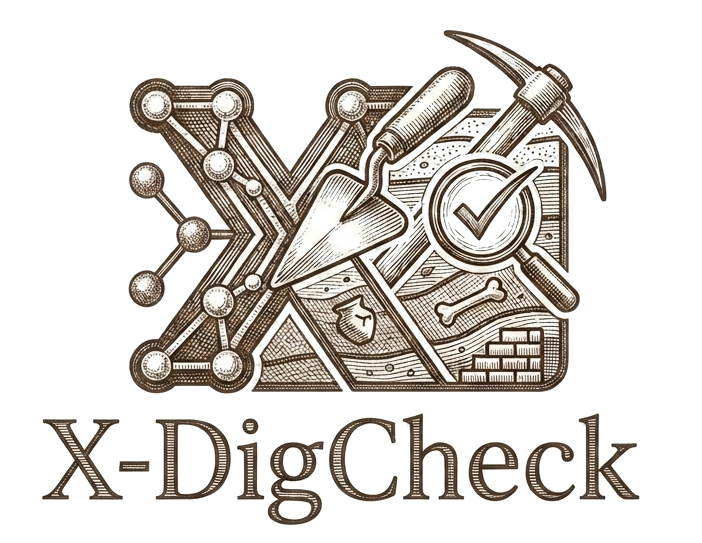
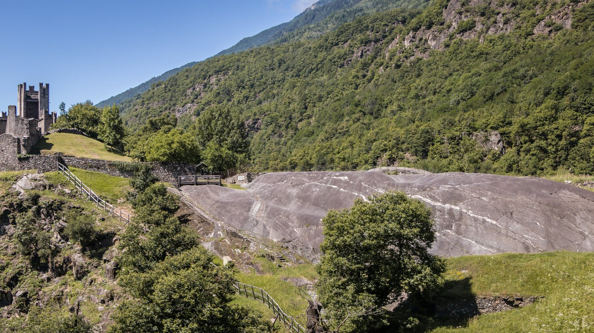
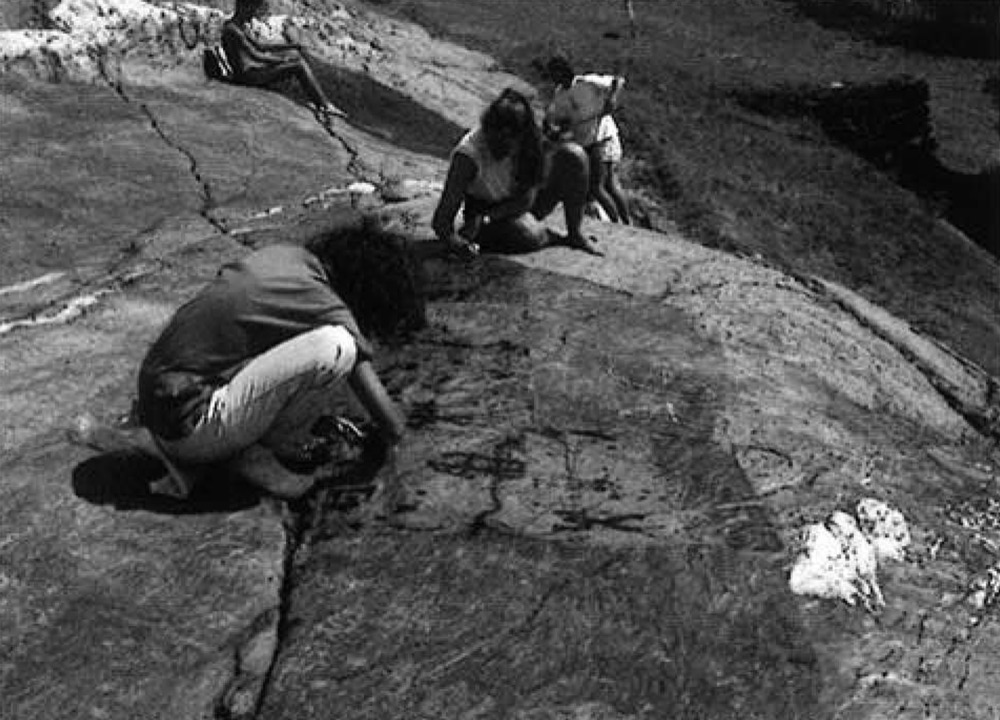
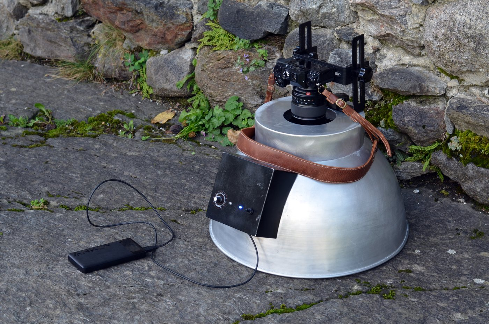
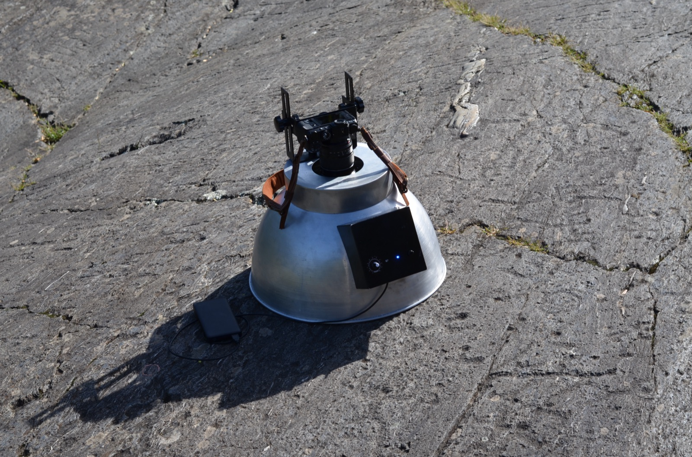
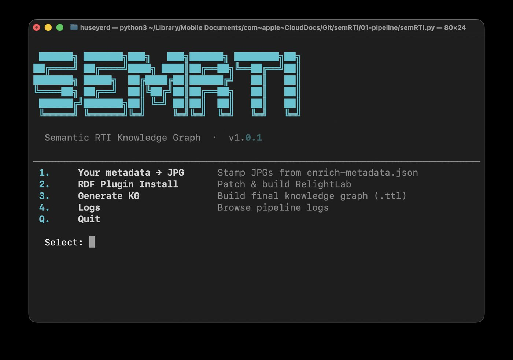
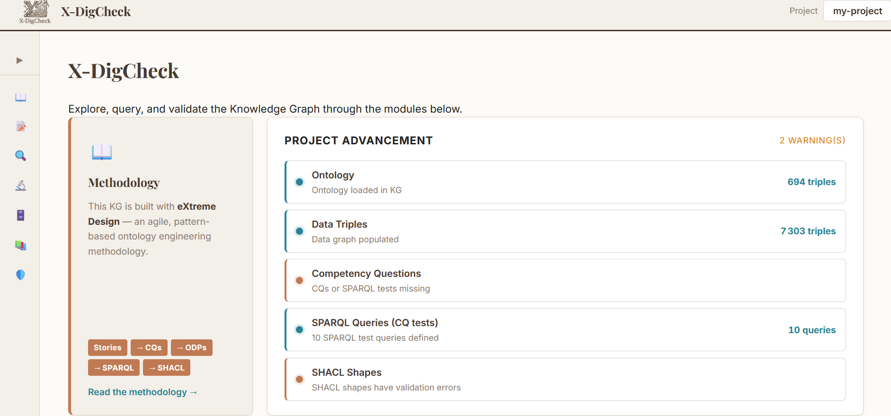
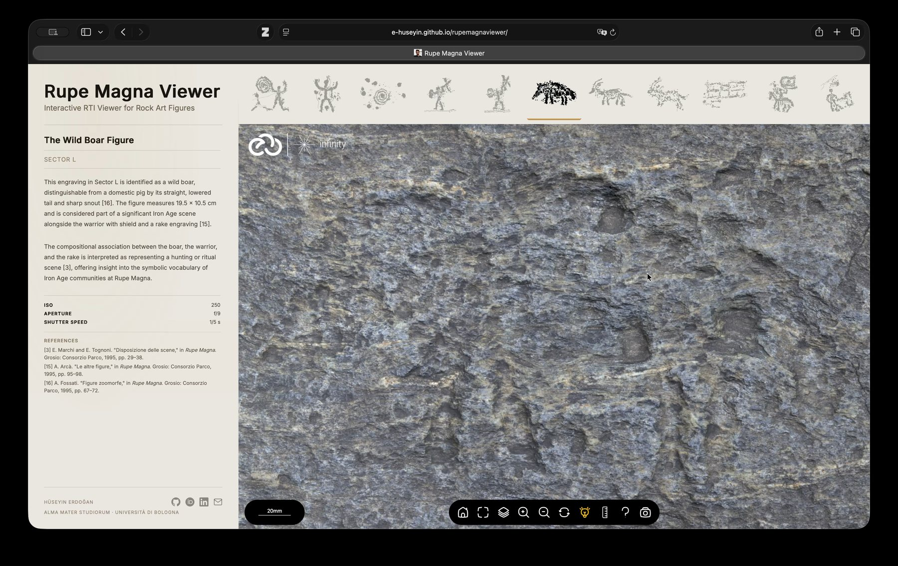

ARCHEO.FOSS 2026
30 November 2026
Hüseyin Erdoğan1 · Valentina Presutti2 · Cristiano Putzolu1 · Célian Ringwald3
Alma Mater Studiorum – University of Bologna

01 · the use case · the site

Repertoire, percentages as published [2] · category total 2,994


01 · the use case · RTI

Acquisition sequence
Elevation / azimuth— / —
Field time0:00
Drag to orbit · scroll to zoom
Double-click to reset zoom
Source tracing · illustrative incision depth [1], [3], [5]
01 · the use case · the data
01 · the use case · semRTI
# abridged from semRTI · construct-photos.sparql [8]
CONSTRUCT {
?photoJpgURI a chs:Result, a-cd:PhotographicDocumentation ;
dct:created ?createDateTime ;
a-cd:digitalFileName ?fileNameJpg .
} WHERE {
SERVICE <x-sparql-anything:…> {
?root a fx:root ; ?idx ?exifItem .
?exifItem xyz:FileName ?fileName .
OPTIONAL { ?exifItem xyz:CreateDate ?createDateRaw }
} # … URIs, labels, provenance
}Semantic construction is part of the lifting itself, not a later transformation step.
01 · the use case · the model
RupeMagna-RTI is aligned with CIDOC CRM / CRMdig [10], ArCo [11], CHAD-KG [12] and Getty AAT
application profile
The shared pattern, specialised for one community of practice: which terms, how many, which values. RupeMagna-RTI is the first RTI specialisation of CHS-ODP.
the RTI profile builds on the pattern [13]
RTI survey→chs:CulturalHeritageSurvey
Rock-art figure→chs:CulturalProperty
Exposure settings→chs:EquipmentConfiguration
02 · X-DigCheck
Profiles evolve with domain knowledge and with the data: developed against a fixed ontology, they quickly drift from the schema they were meant to capture.
Each turn: lift the documentation into the graph, check it, read the report, revise the ontology, the mappings or the data, then regenerate.
The loop is domain- and pipeline-agnostic: semRTI feeds it here, any RDF pipeline can feed it elsewhere.
02 · X-DigCheck · workflow



02 · X-DigCheck · the tool
xdigcheck_cli.pyscripted · repeated · CI-driven runsunused ontology elements, insufficiently described data, modelling mismatches → profile extensions, mapping refinements
elicited before any axiom (eXtreme Design [14]), compiled into SPARQL regression tests run on every KG version
shapes derived from axioms via OWL2SHACL [15] + manual shapes for constraints beyond OWL expressivity
02 · X-DigCheck · competency questions
from the pattern · CHS-ODP
8Which survey activities were performed on a given cultural property or feature?
Which experts took part, and with which roles?
Which hardware, software and configurations were used?
What interpretations are supported by the observations?
for RTI · RupeMagna-RTI
29Which rock-art figure did a given RTI survey document?
Which exposure parameters (ISO, aperture, shutter, focal length) characterise a session?
From which raw capture set is a given RTI model derived?
Where is a rock-art figure located, and which site is it part of?
Each question becomes a SPARQL query, re-run on every version of the graph: a regression test for the documentation.
03 · results · ten turns
03 · results · what the loop produced
04 · demonstration
Inspect the statistics produced across its full agile development cycle: ten turns of the loop.
Compare profile-derived constraints with contextual, manually authored shapes for requirements beyond OWL expressivity, then export the validation report.
Restricted to the alignment between a graph and a profile supplied independently of RupeMagna-RTI, from another use case or from your own data: the same checks generalise.
Coverage and model drift (unused profile terms, data not represented in the profile) are as scriptable as they are browsable.
3-minute screencast [17] · zenodo.org/records/22210609
04 · discussion
Ontology engineering and knowledge-graph construction are not sequential steps: they co-evolve.
Validation tells transformation artefacts (wrong mappings, missing properties) apart from gaps in the field data.
When coverage dropped, the model had run ahead of the data; it recovered once the graph was regenerated.
classes declared in the profile classes used in the graph [13]
future work · use case
acquisition quality assessment, archaeological interpretation, links to existing archaeological literature
reusable, domain-specific profiles from cores such as CHS-ODP, across acquisition techniques and beyond cultural heritage
future work · X-DigCheck
coverage, SHACL and CQ results across Git revisions, in the spirit of ACIMOV [18] and OLIVAW [19]; mapping-technology independent
so that errors caused by the “facelift” step also appear in the generated reports
mapping repair, shape generation, query maintenance, while preserving executable validation criteria for every generated artifact
Open-source prototypes · data under CC BY 4.0 · paper: ISWC 2026 Companion, arXiv:2609.07694
huseyin.erdogan@unibo.it · X-DigCheck project template: codeberg.org/cringwald/X-DigCheck_template
INFINITY · Horizon Europe grant agreement No. 101233051